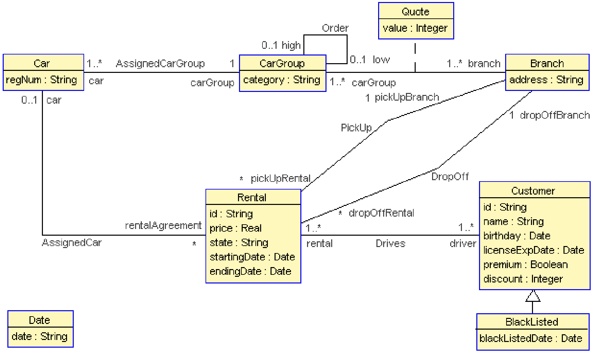
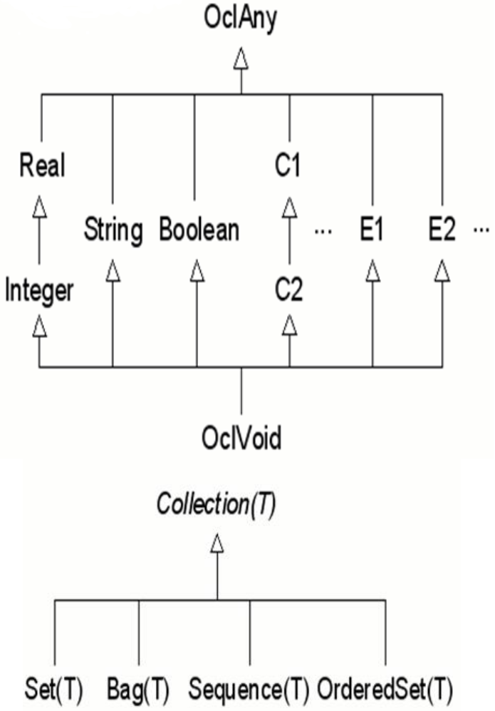
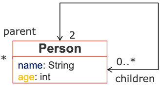
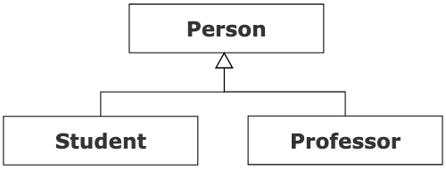

6 The Object Constraint Language (OCL): An Overview
This chapter introduces the Object Constraint Language (OCL), a formal language used to add precise and unambiguous rules to UML models. We will explore why UML diagrams alone are often insufficient and how OCL helps to create more rigorous and verifiable software specifications.
6.1 The Need for Precision: What UML Diagrams Don’t Say
As we have seen, UML diagrams, especially Class Diagrams, are powerful tools for modelling the static structure of a system. However, they cannot capture all the business rules and constraints that govern a system’s behaviour. A diagram can be syntactically correct but still allow for situations that are logically incorrect or violate business rules.
Consider the following class diagram for a car rental system:

This diagram leaves many important questions unanswered:
- Can a customer who is on the blacklist rent a new car?
- How is the price of a rental calculated?
- Can the pickup and drop-off branches be different?
- Should a driver’s license be valid for the entire rental period?
While we could add this information in natural language, this approach is notoriously unreliable. Natural language specifications are prone to what are often called the “7 Deadly Sins”:
These issues make automated verification impossible and lead to costly errors in implementation. To solve this, we need a formal, unambiguous way to express these rules, which is precisely the role of OCL.
6.2 Introduction to OCL
To solve the problems of ambiguity and imprecision, the Object Constraint Language (OCL) was created. It is the official standard from the OMG (Object Management Group) for adding formal constraints to UML models.
OCL is a declarative, textual, and formal language. This means:
- Declarative: You specify what should be true, not how to check it.
- Textual: It integrates seamlessly with the graphical nature of UML diagrams.
- Formal: It has a well-defined mathematical foundation, which removes ambiguity.
It is designed to be a middle ground: more precise than natural language, but less complex and easier to learn than purely mathematical formalisms.
6.2.1 Language Philosophy
To use OCL correctly, it is crucial to understand its core philosophy: OCL is a pure specification language, not a programming language. This has two major consequences:
An OCL expression is a query that can only read the state of the model, it can never change it. You cannot use OCL to assign a value to an attribute, create an object, or call an operation that modifies the system’s state. This guarantees that checking a constraint will never alter the system you are verifying.
The evaluation of an OCL expression is considered to be instantaneous. This is a powerful abstraction that means the state of the system is “frozen” during the evaluation of a constraint. You don’t have to worry about other parts of the system changing while your expression is being checked, which greatly simplifies writing complex rules.
6.3 Main Applications of OCL
OCL is a versatile language used to add precision to a model in several key ways. Let’s explore its main applications with concrete examples based on our car rental system.
Constraining Models (Invariants): The primary use of OCL is to write invariants. An invariant is a rule that must be true for all instances of a class at all times.
Example: A customer’s discount must always be a positive value.
context Customer inv: self.discount >= 0Explanation: This simple invariant ensures that for any
Customerobject, thediscountattribute (which is anIntegerin the diagram) can never be negative.Specifying Contracts (Preconditions & Postconditions): OCL is used to define formal contracts for operations. A precondition must be true before an operation is executed, and a postcondition must be true after.
Example: To extend a rental, its state must be ‘active’.
context Rental::extendRental(newDate: Date) pre must_be_active: self.state = 'active'Explanation: This precondition checks that the
stateattribute of theRentalinstance is equal to the string'active'. The operation cannot be called otherwise.Specifying Derived Values: OCL can define how the value of an attribute should be calculated from other information. This is for values that are not stored directly.
Example: Let’s define a derived boolean attribute
isPrivilegedfor aCustomer.context Customer derive: isPrivileged: Boolean = self.premium = true and self.discount > 10Explanation: This rule states that a customer is considered “privileged” if and only if their
premiumstatus is true and theirdiscountis greater than 10.Defining Queries: You can use OCL to navigate through the model to retrieve information, much like a query.
Example: A query to get the set of all active rentals for a specific customer.
context Customer def: getActiveRentals(): Set(Rental) = self.rental->select(r | r.state = 'active')Explanation: This defines a new operation
getActiveRentalson theCustomerclass. It navigates to the customer’s collection ofrentaland uses theselectiterator to return a new set containing only those rentals whosestateis ‘active’.
6.4 Fundamental OCL Concepts
To write meaningful constraints, we first need to understand the two pillars of the OCL language: its robust typing system, and its precise syntax and the formal semantics that underpin it.
6.4.1 OCL is a Typed Language
Every element in OCL, from an attribute to the result of a complex navigation, has a type. This strong typing system ensures that expressions are well-formed and prevents errors, much like in languages like Java. OCL’s type system is built from three sources:
6.4.1.1 Primitive Types
OCL includes four fundamental, built-in types that are the basis for most expressions:
Integer(e.g.,5,-10)Real(e.g.,3.14,-0.5)String(e.g.,'active','John Doe')Boolean(true,false)
6.4.1.2 UML Model Types
This is a powerful feature: every classifier you define in your UML model automatically becomes a new type in OCL. If you have a class named Customer in your diagram, Customer becomes a valid type in your OCL expressions. This allows you to write constraints that are perfectly tailored to your specific domain.
6.4.1.3 Collection Types
Because navigating associations often results in multiple objects, OCL has a rich set of built-in collection types to handle them. The collection is an abstract type with four concrete subtypes:
| Collection Type | Order Matters? | Duplicates Allowed? | Example Literal |
|---|---|---|---|
Set(T) |
No | No | Set{1, 2, 3} |
OrderedSet(T) |
Yes | No | OrderedSet{1, 2, 3} |
Bag(T) |
No | Yes | Bag{1, 2, 2, 3} |
Sequence(T) |
Yes | Yes | Sequence{1, 3, 2, 3} |
By default, navigating a * multiplicity association returns a Set. Understanding these collection types is essential, as most non-trivial OCL expressions involve manipulating collections.
6.4.2 Special OCL Types
Beyond the primitive and model-based types, OCL provides a set of special, built-in classifiers that are essential for writing advanced constraints. The hierarchy of these types is shown in the diagram below.

Let’s explore the most important ones:
OclAny: This is the supertype of all other types in OCL (except for collection and tuple types). Any operation defined onOclAny(likeoclIsTypeOf()) is available on all objects in your model.OclVoid: This type has only one possible value:null. It is used to check if a property has been set or not. Any expression that results in a division by zero, for example, will evaluate tonull. You can check for this value using theoclIsUndefined()operation.OclInvalid: This type has only one value:invalid. It is used to represent the result of an ill-formed expression, for instance, when trying to navigate fromnull. It is a subtype of all other types, meaning aninvalidvalue can “poison” an entire expression. You can check for it withoclIsInvalid().TupleType: A tuple is a structured type that groups together several named parts, each with its own type. It’s similar to a struct or a record and is very useful for returning multiple values from a query operation.Tuple{name: String = 'Mikel', id: Integer = 123}OclState: This special type is used exclusively within state machine diagrams. The operationoclIsInState(stateName: OclState)allows you to write a constraint that checks if an object is currently in a specific state, which is very powerful for defining state-dependent invariants.OclMessage: Used in interaction diagrams (like sequence diagrams), this type allows you to write constraints on the messages exchanged between objects. For example, you can check if a specific message has been sent or received.
6.4.3 Type Conformance and Subtyping
The OCL type system is not flat, it has a rich hierarchy that defines which types are considered subtypes of others. This is known as type conformance. Understanding these rules is crucial, as it determines when a value of one type can be used where a value of another type is expected.
The main rules of type conformance in OCL are as follows:
- For primitive numbers, the hierarchy is logical:
UnlimitedNaturalis a subtype ofInteger, which is a subtype ofReal. OclAnyis the ultimate supertype for all non-collection types. This means any object from your UML model is conformant toOclAny.- The hierarchy of your UML model types mirrors the generalization (inheritance) relationships in your class diagram. If you have a
Studentclass that inherits fromPerson, thenStudentis a subtype ofPersonin OCL. - For collections,
Set(T),Bag(T),Sequence(T), andOrderedSet(T)are all subtypes of the generalCollection(T)type. - The special types have their own rules:
OclVoid(representingnull) is a subtype of all other types (exceptOclInvalid).OclInvalidis the ultimate subtype, it is a subtype of every other type. This explains why aninvalidvalue can propagate through and “poison” any expression.
This hierarchy is visualized in the diagram below.

6.4.4 Standard OCL Operators
Like any language, OCL comes with a standard set of operators to perform logical, relational, and arithmetic operations. These are the building blocks for creating complex boolean expressions within your constraints.
6.4.4.1 Logical Operators
OCL supports the standard boolean logic operators. Note that they are written in lowercase.
| Operator | Syntax | Description |
|---|---|---|
| and | a and b |
True if both a and b are true. |
| or | a or b |
True if either a or b is true. |
| xor | a xor b |
True if exactly one of a or b is true. |
| not | not a |
True if a is false. |
| implies | a implies b |
False only if a is true and b is false. |
Example: A premium customer must have a discount.
context Customer inv:
self.premium implies (self.discount > 0)6.4.4.1.1 The if-then-else Expression
Unlike in many programming languages, if in OCL is not a statement but an expression that always returns a value.
context Customer
def: customerCategory: String =
if self.premium then
'High Value'
else
'Standard'
endifif expressions
- The
elseclause is mandatory. Sinceifis an expression, it must always result in a value, so theelsepart can never be omitted. - Type Conformance. The type of the
ifexpression is the most specific common supertype of thethenexpression and theelseexpression.
6.4.4.1.2 A Note on Evaluation
OCL has a very specific rule for evaluating boolean expressions that differs from many common programming languages.
The logical operators and, or, and xor in OCL are strict. This means that both operands are always evaluated, even if the result of the first operand is enough to determine the outcome. There is no “short-circuit” or “lazy” evaluation. This is a common source of errors, especially when dealing with potentially null values.
6.4.4.2 Relational, Arithmetic, and String Operators
OCL provides a rich set of standard operators for the primitive types, allowing for the construction of detailed and precise expressions.
6.4.4.2.1 Relational Operators
These operators are used for comparison and work across most primitive types to produce a Boolean result.
| Operator | Description |
|---|---|
= |
Equality |
<> |
Inequality (not equal) |
< |
Less than |
> |
Greater than |
<= |
Less than or equal to |
>= |
Greater than or equal to |
6.4.4.2.2 Arithmetic Operators for (Integer and Real)
OCL provides a standard library of arithmetic functions for numerical types.
| Operator | Description |
|---|---|
+, -, *, / |
Addition, Subtraction, Multiplication, Division |
abs() |
Absolute value |
floor(), round() |
Floor and Rounding functions |
max(n), min(n) |
The maximum or minimum of two numbers |
mod(n) |
Modulo operation |
6.4.4.2.3 Operators for Strings (String)
OCL includes a powerful set of operations for manipulating strings.
| Operation | Description | Example |
|---|---|---|
size() |
Returns the number of characters in the string. | 'hello'.size() = 5 |
concat(s2) |
Concatenates another string s2. |
'hello'.concat(' world') results in 'hello world' |
toUpper() |
Converts the string to uppercase. | 'hello'.toUpper() results in 'HELLO' |
toLower() |
Converts the string to lowercase. | 'HELLO'.toLower() results in 'hello' |
substring(i1, i2) |
Returns the substring from index i1 to i2. |
'hello'.substring(2, 4) results in 'ell' |
Example: An invariant stating that a car group’s category must be a single uppercase letter.
context CarGroup inv:
self.category.size() = 1 and self.category = self.category.toUpper()6.4.4.3 Operator Precedence
OCL defines a strict order of precedence to determine how complex expressions are evaluated. The following table lists the operators in decreasing order of priority, from highest (evaluated first) to lowest (evaluated last).
| Priority | Operator(s) | Description |
|---|---|---|
| 1 (Highest) | @pre |
Time marker (used in post-conditions) |
| 2 | . , -> |
Navigation (dot and arrow) |
| 3 | not , - |
Unary operators (negation) |
| 4 | * , / |
Multiplication, Division |
| 5 | + , - |
Addition, Subtraction (binary) |
| 6 | if-then-else-endif |
Conditional expression |
| 7 | = , <> , > , < , >= , <= |
Relational operators |
| 8 | and , or , xor |
Logical operators |
| 9 | implies |
Logical implication |
| 10 (Lowest) | in |
(Not covered yet) |
Even if you know the precedence rules, it is always a good practice to use parentheses () to make your expressions explicit and easier to read. This avoids any ambiguity for you and for others who will read your model.
6.4.5 The context and self Keywords
Every OCL constraint is anchored to a specific element in the UML model. The context keyword declares this anchor, defining the perspective from which the OCL expression will be evaluated. Within this context, the keyword self always refers to the specific instance of the element being constrained.
OCL defines three primary types of context:
6.4.5.1 Classifier Context
This is the most common context, used for defining invariants. The context is a classifier, typically a class, and self refers to an instance of that class.
Syntax: context <ClassName>
context Customer inv:
self.discount >= 06.4.5.2 Operation Context
This context is used to define preconditions and postconditions for an operation. The context is a specific operation within a class, and self refers to the instance of the class on which the operation is being called.
Syntax: context <ClassName>::<operationName>(...)
context Rental::extendRental(newDate: Date)
pre: self.state = 'active'6.4.5.3 3. Attribute Context
This context is used to define constraints on an attribute, typically for derived values or initial values. The context is a specific attribute within a class, and self refers to the instance of the class that owns the attribute.
Syntax: context <ClassName>::<attributeName>: <Type>
context Customer::isPrivileged: Boolean
derive: self.premium = true and self.discount > 106.4.6 Writing Constraints: Invariants
The most common type of constraint you will write in OCL is the invariant.
An invariant is a constraint that must be true for all instances of a class at all times during the system’s execution. It defines a condition of integrity that can never be violated. If an operation causes an invariant to become false, the system is considered to be in an invalid state.
6.4.6.1 Syntax
The general syntax for an invariant is straightforward:
context <Classifier> inv []: <boolean_expression>
context <Classifier>: Specifies the class to which the invariant applies.inv: The stereotype indicating this is an invariant.[<constraint_name>]: An optional but highly recommended name for the constraint.<boolean_expression>: The OCL expression that must always evaluate totrue.
6.4.6.2 Invariant Examples
Let’s illustrate with a few examples based on our car rental system.
6.4.6.2.1 Example 1: Simple Attribute Constraint
A very common use for invariants is to restrict the possible values of an attribute.
- Rule: A customer’s discount must be a positive value.
context Customer inv:
self.discount >= 06.4.6.2.2 Example 2: Constraint Across an Association
Invariants are powerful for defining rules that involve multiple, associated classes.
- Rule: A car that is currently assigned to an active rental cannot be part of a
CarGroupmarked as ‘in_maintenance’.
context Car inv:
self.rental->exists(r | r.state = 'active') implies
self.carGroup.category <> 'in_maintenance'6.4.6.2.3 Example 3: Constraint with Inheritance
Invariants can also enforce rules related to a class hierarchy.
- Rule: A customer who is on the blacklist (i.e., is of type
BlackListed) cannot have any active rentals.
context Customer inv:
self.oclIsTypeOf(BlackListed) implies
self.rental->select(r | r.state = 'active')->isEmpty()6.4.7 Writing Contracts: Preconditions and Postconditions
While invariants define the rules for a class’s state, preconditions and postconditions define a contract for its operations. They specify what an operation requires to run and what it guarantees to accomplish.
- A precondition is a constraint that must be
truebefore an operation is executed. It is the responsibility of the caller to satisfy the precondition. If it’s false, the operation should not be called. - A postcondition is a constraint that must be
trueafter an operation has successfully completed. It is the responsibility of the operation itself to establish the postcondition.
6.4.7.1 Syntax
The syntax is similar to invariants, but the context is an operation, and the stereotypes are pre and post.
context <Classifier>::<operationName>(...) pre []: <boolean_expression> post []: <boolean_expression>
6.4.7.1.1 Precondition Example
A precondition specifies the conditions under which an operation can be legally called.
- Rule: A customer can only be added to the blacklist if they are not already on it.
context Customer::addToBlackList(d: Date)
pre is_not_already_blacklisted:
self.oclIsTypeOf(BlackListed) = falseExplanation: This contract states that before calling addToBlackList on a Customer object, that object must not already be of the type BlackListed.
6.4.7.1.2 Postcondition Example and the @pre Keyword
A postcondition specifies the state of the system after the operation has finished. A crucial tool for this is the @pre keyword, which allows you to refer to a value as it was before the operation started.
- Rule: After a customer is successfully added to the blacklist, they must be of the type
BlackListed.
context Customer::addToBlackList(d: Date)
post is_now_blacklisted:
self.oclIsTypeOf(BlackListed) = trueHere’s a more complex example using @pre:
- Rule: After a rental is extended, the new end date must be the one provided, and the number of associated cars must not have changed.
context Rental::extendRental(newDate: Date)
post end_date_is_updated:
self.endingDate = newDate
post number_of_cars_is_unchanged:
self.assignedCar->size() = self.assignedCar@pre->size()Explanation:
- The first postcondition checks the new value of
endingDate. - The second postcondition is critical: it uses
self.assignedCar@preto refer to the collection of cars before the operation ran and ensures its size has not changed. This prevents unintended side effects.
6.4.8 Initial and Derived Values, Query and Body Definitions
Beyond invariants and contracts, OCL can be used to precisely define how attributes and operations get their values.
6.4.8.1 init: Specifying Initial Values
The init stereotype allows you to define a constraint for the initial value of an attribute when an object is created. This is more powerful than a simple default value because you can use a complex OCL expression.
Syntax: context <ClassName>::<attributeName>: <Type> init: <expression>
Example: When a Rental object is created, its state is initialized to ‘planned’.
context Rental::state: String
init: 'planned'6.4.8.2 derive: Specifying Derived Values
The derive stereotype is used for attributes whose value is not stored but is always calculated based on other properties of the model. This is used for derived attributes, which are often denoted with a / in front of their name in a class diagram.
Syntax: context <ClassName>::<attributeName>: <Type> derive: <expression>
Example: A customer is considered “privileged” if they are premium and have a discount greater than 10.
context Customer::isPrivileged: Boolean
derive: self.premium = true and self.discount > 106.4.8.3 def: Defining Query Operations
The def stereotype allows you to define the body of a query operation directly in OCL. This is useful for specifying operations that retrieve information without changing the system’s state.
Syntax: context <ClassName> def: <operationName>(): <ReturnType> = <expression>
Example: Defining an operation that returns the set of all active rentals for a customer.
context Customer
def: getActiveRentals(): Set(Rental) =
self.rental->select(r | r.state = 'active')6.4.8.4 body: Defining Operation Bodies
While def is used to define a new query operation not present in the UML model, the body stereotype is used to provide a concrete implementation for an operation that is already declared in a class diagram.
This is particularly useful when you want to formally specify the result of a query operation without leaving its logic ambiguous.
Syntax: context <ClassName>::<operationName>(): <ReturnType> body: <expression>
Example: Defining the body for a getDiscountedPrice() operation on the Rental class.
context Rental::getDiscountedPrice(): Real
body: self.price * (1 - self.customer.discount/100.0)Explanation: This OCL constraint provides the implementation for the getDiscountedPrice() operation. It specifies that the returned Real value is calculated by taking the rental’s base price and applying the discount associated with the customer. Any programming language implementation of this class would now have a formal specification to follow for this method.
6.4.10 Working with Collections
Because navigation often results in collections, OCL provides a rich set of predefined operations to query and manipulate them. These operations are always invoked using the arrow (->) notation.
6.4.10.1 Basic Operations
These operations provide fundamental information about a collection or check for the presence of specific elements.
size(): Returns the number of elements.isEmpty()/notEmpty(): Checks if the collection is empty or not.includes(obj)/excludes(obj): Checks if a specific object is in the collection.includesAll(coll2)/excludesAll(coll2): Checks if all (or no) elements of another collectioncoll2are present.count(obj): Counts the occurrences of an object in the collection (most useful forBagandSequence).
Example: An invariant stating that a Person must have exactly two parents.
context Person inv:
self.parent->size() = 26.4.10.2 Iterators: The Power of Collections
The most powerful feature of OCL collections is the ability to use iterators. An iterator is an operation that evaluates an expression for each element in a collection, allowing you to filter, transform, or verify its properties.
6.4.10.2.1 select and reject (Filtering)
These are the primary tools for filtering a collection. They return a new collection containing only the elements that satisfy (or don’t satisfy) a condition.
select(v | boolean_expression): Returns a sub-collection with elements for which the expression istrue.reject(v | boolean_expression): Returns a sub-collection with elements for which the expression isfalse.
Example: Select all rentals for a customer that are currently active.
context Customer
def: getActiveRentals(): Set(Rental) =
self.rental->select(r | r.state = 'active')6.4.10.2.2 forAll and exists (Quantifiers)
These iterators evaluate a condition over a collection and return a single Boolean value. They are essential for writing precise invariants.
forAll(v | boolean_expression): Returnstrueif the expression is true for all elements.exists(v | boolean_expression): Returnstrueif the expression is true for at least one element.
Example: An invariant stating that all cars in a “Luxury” car group must be of the brand “Mercedes”.
context CarGroup inv:
self.category = 'Luxury' implies
self.car->forAll(c | c.brand = 'Mercedes')6.4.10.2.3 collect (Transformation)
The collect iterator transforms a collection by applying an expression to each of its elements. It returns a new Bag containing the results (similar to a map function).
Example: Get a collection of all the registration numbers of the cars rented by a customer.
context Customer
def: allRentedCarRegNums(): Bag(String) =
self.rental.assignedCar.car->collect(c | c.regNum)6.4.10.3 closure (Transitive Closure)
The closure iterator is an advanced and extremely powerful operation that calculates the transitive closure of a relationship over a collection. In simpler terms, it allows you to repeatedly navigate through an association until no more new elements can be discovered.
This is the perfect tool for working with hierarchical or graph-like structures, such as finding all descendants of a person in a family tree or all sub-parts in an assembly.
Syntax: collection->closure( v | navigation_expression )
Example: Find all descendants of a person (their children, their children’s children, and so on).

context Person
def: getAllDescendants(): Set(Person) =
self.children->closure(p | p.children)Explanation:
self.children: The expression starts with the set of the person’s direct children.->closure(p | p.children): Theclosureiterator then takes each personpfrom that set, finds their ownchildren, adds them to the result, and repeats this process until no new descendants can be found. The final result is a flattenedSetcontaining all descendants at every level.
6.4.11 Operations on All Objects (OclAny)
Because OclAny is the supertype of all types in your model, the operations it defines are available on every object. These are fundamental tools for checking equality, types, and for casting.
6.4.11.1 Equality (= and <>)
These operators check if two expressions refer to the exact same object instance.
a = b: Returnstrueifaandbare the same object.a <> b: Returnstrueifaandbare different objects.
6.4.11.2 Type Checking: oclIsTypeOf vs. oclIsKindOf
These two operations are crucial for writing constraints in a generalization hierarchy, but they have a very important semantic difference.
oclIsTypeOf(Type): Returnstrueonly if the object is an instance of that exact type, and not a subtype.oclIsKindOf(Type): Returnstrueif the object is an instance of that type or any of its subtypes.
Let’s consider the following hierarchy:

The following examples illustrate the difference:
context Person inv:
self.oclIsKindOf(Person) -- returns true
self.oclIsTypeOf(Person) -- returns true
self.oclIsKindOf(Student) -- returns false
self.oclIsTypeOf(Student) -- returns truecontext Student inv:
self.oclIsKindOf(Person) -- returns true
self.oclIsTypeOf(Person) -- returns false
self.oclIsKindOf(Student) -- returns true
self.oclIsTypeOf(Student) -- returns true
self.oclIsKindOf(Professor)-- returns false
self.oclIsTypeOf(Professor)-- returns false6.4.11.3 Type Casting: oclAsType
This operation allows you to cast an object to a more specific subtype. This is necessary when you need to access attributes or operations that are only defined on that subtype.
oclAsType(Type): Casts the object to the specifiedType. If the object is not actually of that type or one of its subtypes, the expression result isinvalid.
Example: An invariant on a Person object, stating that if that person is a Student, their student ID must not be empty.
context Person inv:
self.oclIsKindOf(Student) implies
self.oclAsType(Student).studentId->notEmpty()Explanation: We first check if the Person is a Student (or a subtype). If so, we cast self to Student to be able to safely access the studentId attribute.
6.4.11.4 Handling Undefined Values (OclVoid)
In OCL, the value null has a specific type: OclVoid. It is used to represent an object that does not exist or an attribute that has not been set.
oclIsUndefined(): Returnstrueif the object isnull.oclIsInvalid(): Returnstrueif an expression is ill-formed (e.g., navigating fromnull).
Example: An invariant stating that every Rental must be associated with a Customer (i.e., the driver role cannot be empty).
context Rental inv:
self.driver.oclIsUndefined() = falseThis is a robust way to check that a mandatory association (1..*) is respected.
6.4.12 Special Operations: allInstances and oclIsNew
To conclude our overview of OCL, let’s look at two special operations that operate at a meta-level: one that queries all objects of a certain type, and another that checks for an object’s creation within a postcondition.
6.4.12.1 allInstances(): Accessing All Objects of a Type
The allInstances() operation is unique because it is called directly on a class, not on an instance (self). It returns a Set containing all instances of that specific class that currently exist in the system at the time of evaluation.
Syntax: <ClassName>.allInstances()
This operation is extremely powerful for writing global invariants that must hold true across the entire system.
Example: An invariant to enforce that every employee in the system has a unique employee ID.
context Employee inv:
Employee.allInstances()->forAll(e1, e2 |
e1 <> e2 implies e1.employeeId <> e2.employeeId
)The allInstances() operation can be computationally expensive and conceptually dangerous. Using it on a type with a potentially huge or even infinite number of instances (like Integer or String) can lead to problems. It is best reserved for application-specific classes where the number of instances is manageable.
6.4.12.2 oclIsNew(): Checking Object Creation
The oclIsNew() operation is a special tool used only in postconditions. It returns true if the object on which it is called was created during the execution of the operation specified in the context.
Example: A postcondition for a createRental(...) operation on the Customer class, stating that a new Rental object has been created and is now linked to the customer.
context Customer::createRental(...)
post: let newRental : Rental = self.rental->select(r | r.oclIsNew())->asSequence()->first() in
newRental.oclIsUndefined() = false and newRental.customer = selfExplanation: This advanced postcondition first finds the new Rental object created during the operation using oclIsNew() and then asserts that this new rental exists and is correctly associated with the current customer (self).